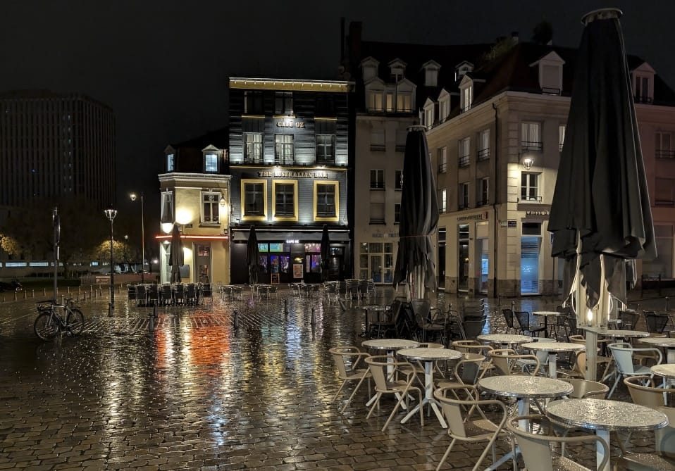

Bars et sorties à Lille
Trois quartiers, trois ambiances. À vous de voir selon l'envie du soir.

Où sortir, quartier par quartier
Rue Solférino, l'ambiance étudiante
C'est la rue la plus animée de Lille le soir. Beaucoup de bars, des happy hours qui durent, des pintes pas chères. C'est bruyant, c'est festif, et le public est surtout étudiant. Le Solférino, au 156, est un bar-tabac sympa avec une petite terrasse et des jeux. Juste à côté, au 23 rue Masséna, le Shooter's Bar porte bien son nom : une longue liste de shooters, une terrasse, et une ambiance qui monte vite dans la soirée. Il ouvre à partir de 16h.
Le Vieux-Lille, pour un verre plus calme
On change complètement d'ambiance. Des bars à vin comme Au Gré du Vin ou Nectar Dégustation, où on vient découvrir une bouteille plutôt qu'enchaîner les tournées. La pierre et les poutres apparentes font beaucoup le soir.
Pour les amateurs de cocktails, je vous conseille Le Quai des Bananes, à l'entrée de la rue Royale. L'ambiance est chaleureuse et un peu tropicale, et les prix restent abordables. Il y a une cave et une terrasse fermée, donc on peut y rester tranquille entre amis même quand il fait froid. Le choix de cocktails et de mocktails est large, et il y a aussi des bières pour ceux qui préfèrent. Ouvert tous les jours.
Wazemmes, le quartier le plus mélangé
Des bars à bières artisanales, des endroits à cocktails, d'autres plus alternatifs, dans un quartier vivant et multiculturel. D'une rue à l'autre, l'ambiance n'a rien à voir. C'est le coin idéal pour sortir sans savoir à l'avance où on va finir.
Centre de Lille, pour le sport et les grandes tablées
Le centre attire un public plus large que les autres quartiers : étudiants, gens qui sortent du bureau, groupes d'amis, et beaucoup d'étrangers de passage. C'est là que se trouvent les grandes adresses, celles qui peuvent accueillir cinquante personnes sans que ça devienne invivable.
Le Delirium Café, 14 rue Léon Trulin, est le meilleur exemple. Deux étages, quatre comptoirs pour se servir : on n'attend jamais vingt minutes pour une pinte un samedi soir. La carte de bières est large, surtout belge, et comptez entre 6 et 8 € la pinte. Happy hour en semaine de 16h à 19h, ça change nettement l'addition. Les horaires bougent parfois, l'ardoise à l'entrée fait foi.
C'est surtout l'adresse à connaître si vous voulez voir un match. Beaucoup d'écrans, le programme de la semaine affiché, et une salle qui se remplit pour les grosses affiches de foot ou de rugby. On y croise souvent des supporters venus de l'étranger pour suivre leur équipe. Si vous passez à Lille un soir de Coupe d'Europe, vous trouverez du monde qui encourage le même maillot que vous.
Attention quand même : les soirs de gros match, la salle se remplit bien avant le coup d'envoi. Arrivez une heure avant si vous voulez être assis.
Conseils pratiques
- Étudiant / animé
- Rue Solférino
- Calme / dégustation
- Vieux-Lille
- Cocktails
- Le Quai des Bananes, rue Royale
- Varié / local
- Wazemmes
- Sport
- Delirium Café, rue Léon Trulin
- Rentrer
- Le métro (ligne 2) tourne jusque tard le week-end. Sinon, les tarifs de nuit des VTC restent raisonnables